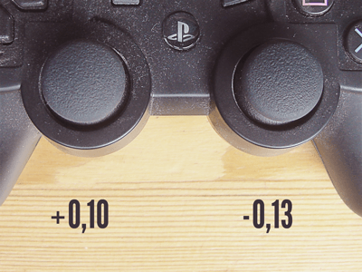

{Your name, event, location, date}
W3C Working Draft
Core editors:
Version 21+ (prefixes), 35+ (default) [45]
Version 24+ (prefixes), 29+ (default) [40]
Version 15+ (prefixes), 22+ (default) [31]
No support
No support
Version 12+
Most popular: XBox 360/One, PS3/PS4 on Windows/Mac.
Privacy: interact first while the page is visible to get the event.
window.addEventListener("gamepadconnected", function(e) {
console.log("Gamepad connected: "+e.gamepad.id);
});
window.addEventListener("gamepaddisconnected", function(e) {
console.log("Gamepad disconnected: "+e.gamepad.id);
});id - information about the controllerindex - unique integer of the connected deviceconnected - true if connectedmapping - layout of the buttons, "standard"axes - array of floating point values, state of each axisbuttons - array of GamepadButton objects, state of each button, pressed and value propertiesfunction addgamepad(gamepad) {
controllers[gamepad.index] = gamepad;
window.requestAnimationFrame(updateStatus);
}function updateStatus() {
for(c in controllers) {
var controller = controllers[c];
for(var i=0; i<controller.buttons.length; i++) {
var buttonPressed = controller.buttons[i].pressed;
if(buttonPressed) {
console.log("Button id="+i+" was pressed");
} else {
console.log("Button id="+i+" was released");
}
}
}
}Buttons: integer, 0 or 1.
Axes: float, -1 to 1.
Config.threshold = 0.5;GitHub Game Off II theme: Change
Full Screen, Pointer Lock, Gamepad
Supported, easy to implement, no plugins.
Rich console-like experience in the browser!